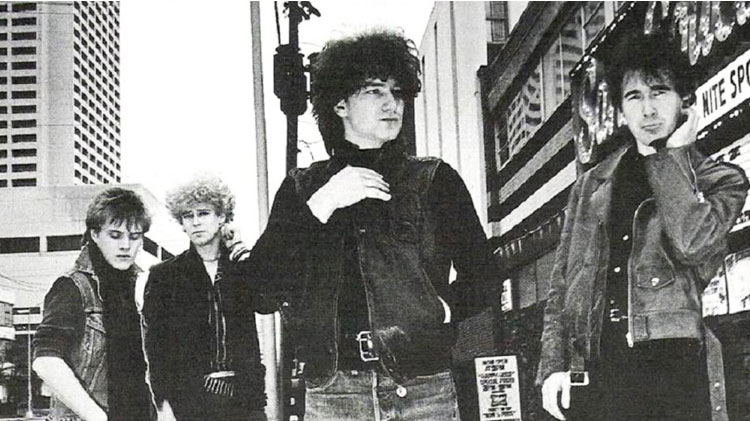
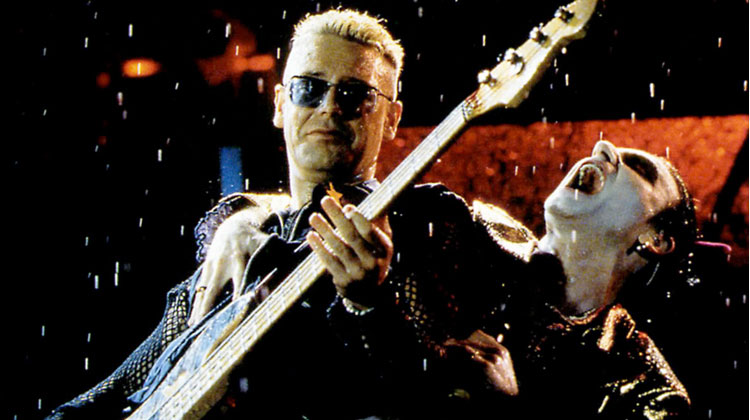

U2 are an Irish rock band from Dublin formed in 1976. The group consists of Bono (lead vocals and rhythm guitar), the Edge (lead guitar, keyboards, and backing vocals), Adam Clayton (bass guitar), and Larry Mullen Jr. (drums and percussion). Initially rooted in post-punk, U2's musical style evolved throughout their career, yet has maintained an anthemic sound built on Bono's expressive vocals and the Edge's effects-based guitar textures. Their lyrics, often embellished with spiritual imagery, focus on personal and sociopolitical themes. Popular for their live performances, the group have staged several ambitious and elaborate tours over their career.
 The band formed at Mount Temple Comprehensive School in 1976 when the members were teenagers with limited musical proficiency. Within four years, they signed with Island Records and released their debut album, Boy (1980). Subsequent work such as their first UK number-one album, War (1983), and the singles "Sunday Bloody Sunday" and "Pride (In the Name of Love)" helped establish U2's reputation as a politically and socially conscious group. By the mid-1980s, they had become renowned globally for their live act, highlighted by their performance at Live Aid in 1985. The group's fifth album, The Joshua Tree (1987), made them international superstars and was their greatest critical and commercial success. Topping music charts around the world, it produced their only number-one singles in the US, "With or Without You" and "I Still Haven't Found What I'm Looking For"
Facing creative stagnation and a backlash following their documentary/double album, Rattle and Hum (1988), U2 reinvented themselves in the 1990s through a new musical direction and public image. Beginning with their acclaimed seventh album, Achtung Baby (1991), and the multimedia-intensive Zoo TV Tour, the band integrated influences from alternative rock, electronic dance music, and industrial music into their sound, and embraced a more ironic, flippant image. This experimentation continued through their ninth album, Pop (1997), and the PopMart Tour, which were mixed successes. U2 regained critical and commercial favour with the records All That You Can't Leave Behind (2000) and How to Dismantle an Atomic Bomb (2004), which established a more conventional, mainstream sound for the group. Their U2 360° Tour of 2009–2011 is the highest-attended and highest-grossing concert tour in history. The group's thirteenth album, Songs of Innocence (2014), was released at no cost through the iTunes Store, but received criticism for its automatic placement in users' music libraries.
 U2 have released 14 studio albums and are one of the world's best-selling music artists in history, having sold more than 170 million records worldwide.[1] They have won 22 Grammy Awards, more than any other band, and in 2005, they were inducted into the Rock and Roll Hall of Fame in their first year of eligibility. Rolling Stone ranked U2 at number 22 on its list of the "100 Greatest Artists of All Time".[2] Throughout their career, as a band and as individuals, they have campaigned for human rights and social justice causes, including Amnesty International, Jubilee 2000, the ONE/DATA campaigns, Product Red, War Child, and Music Rising.
Band Members
- Principal Members
- Bono – lead vocals, rhythm guitar, harmonica
- The Edge – lead guitar, keyboards, backing vocals
- Adam Clayton – bass guitar
- Larry Mullen Jr. – drums, percussion
- Early Members
-
Dik Evans – guitar
(1976–1978) -
Ivan McCormick – guitar
(1976)
Background
- Genres
- Rock
- Alternative rock
- Post-punk
- Labels
- Island
- Interscope
- Mercury
- Associated Acts
- Virgin Prunes
- Passengers